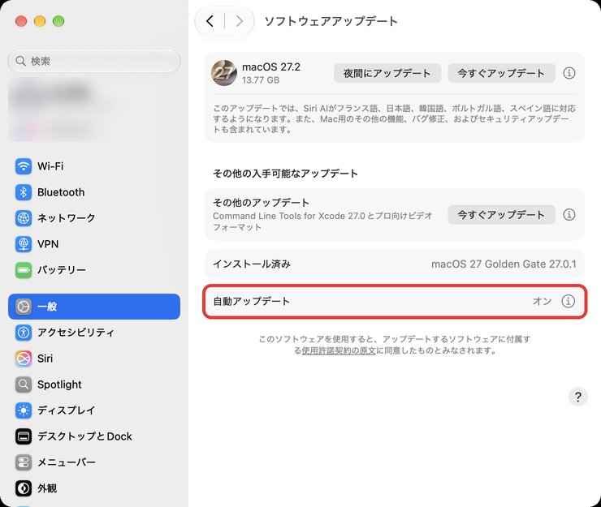
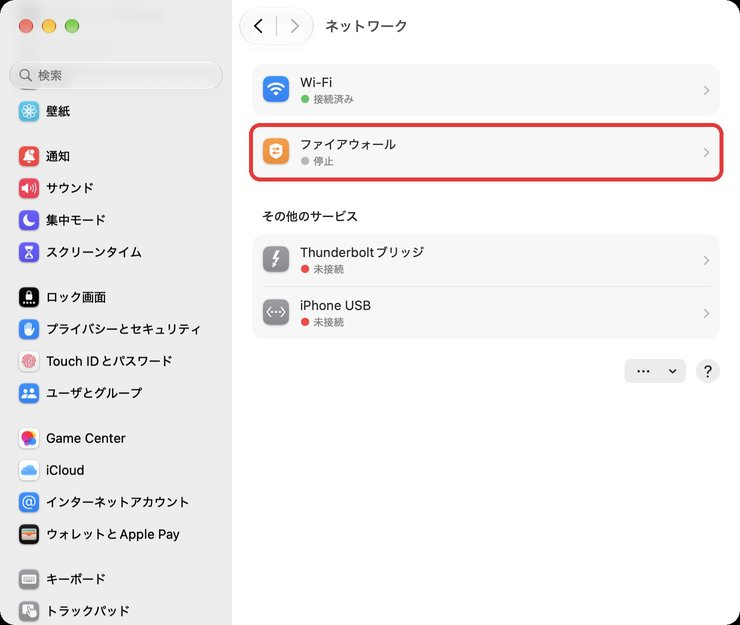
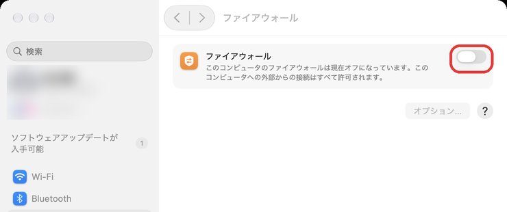
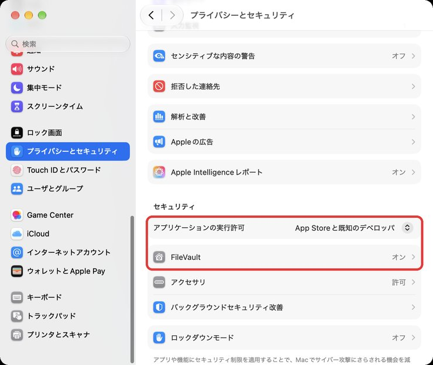

1アップデートを自動にする
なぜ：ウイルス対策の中身も、このアップデートで新しくなります。
止めていると守りが古いままになります。
- 「システム設定」を開く
- 左の列で「一般」を押す
- 右側の「ソフトウェアアップデート」を押す
- 「自動アップデート」がオンになっているか見る（オフなら右の ⓘ を押して、全部オンにする）
- 上に「今すぐアップデート」が出ていたら、仕事の区切りで押す（再起動するので、保存してから）

別のソフトを買わなくて大丈夫です。
そのかわり、このページの「3つの設定」だけ確かめてください。
10分あれば終わります。

使っている人が多く、ずっと狙われやすい立場でした。
昔は標準の守りも弱く、ノートンやウイルスバスターを入れるのが当たり前でした。
ウイルス対策が最初から入っていて、裏で自動で動いています。
画面に何も出てこないので「守られていない」ように見えるだけです。
いまはWindowsにも標準の「Microsoft Defender」があり、Windowsでも別売りのソフトがなくて困ることは少なくなっています。

どれも、設定がオンのままなら自動で働きます。
なので大事なのは「ソフトを足すこと」より「オンになっているか確かめること」です。
設定の画面は、画面の左上にあるりんごのマーク（）を押して「システム設定…」を選ぶと開きます。
左上の「検索」に言葉を入れて探すこともできます。
なぜ：ウイルス対策の中身も、このアップデートで新しくなります。
止めていると守りが古いままになります。

なぜ：カフェやホテルのWi-Fiで、外から勝手に入ってくる接続を止めます。
Macは最初「停止」になっていることが多い設定です。


オンにしても、ネット・Zoom・LINE・メール・AirDrop・iPhoneとの同期は、今までどおり使えます。
オンにした直後だけ、アプリによって「〇〇への着信ネットワーク接続を受け入れますか？」と聞かれることがあります。
自分で入れたアプリなら「許可」、心当たりがなければ「拒否」で大丈夫です。
一度答えれば、同じアプリでは聞かれません。
「オプション…」の中の「外部からの接続をすべてブロック」はオンにしないでください。
AirDropや画面共有まで止まって不便になります。
なぜ：知らない所のアプリを開けないようにして、Macをなくしたときも中身を守ります。
お客さまの資料を扱うので、ここは必ず見ておいてください。

FileVaultをオンにするときに出る「復旧キー」は、Macのパスワードを忘れたときの合鍵です。
「iCloudアカウントで解除できるようにする」を選んでおけば、自分で控える必要はありません。
いまのMacの被害は、ウイルスより「だまされて自分で入れてしまう」ものがほとんどです。
ここは設定では防げないので、覚えておいてください。
ネットを見ているときに急に出る警告は、ほぼ全部が偽物です。
Macの本物の警告は、ブラウザの中には出ません。
書かれた番号に電話しない・何も入れない。
ブラウザを command＋Q で閉じればおしまいです。
Windowsの感覚で検索して入れてしまう人が多いアプリです。
中には、それ自体が困ったアプリのものもあります。
アプリはApp Storeか、使う会社の公式サイトからだけ入れる。
Google・LINE・銀行・Metaなどのふりをしたメールやメッセージから、偽の画面に飛ばされます。
メールのリンクからはログインしない。
いつものブックマークやアプリから開き直す。
Macのバージョンで場所が少し変わります。
「システム設定」の左上の「検索」に「ファイアウォール」「FileVault」と入れると、その画面に飛べます。
Macを起動したときに入れるパスワードです。
分からないときは、無理に進めずそのままにしておいてください。
まずブラウザを閉じてください。
何かを入れてしまった、電話をかけてしまったときは、ひとりで何とかしようとせず、すぐ森川にLINEで連絡してください。
会社や取引先から「入れること」と言われた場合だけで大丈夫です。
入れるときは、自分で選ばず先に相談してください。